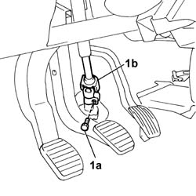
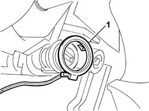
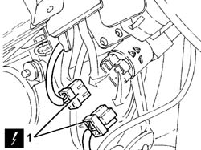
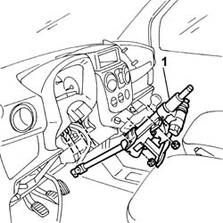

4110A30 Steering control shaft SUPPORT - R.R.
- Path
- Procedures > 41 STEERING UNIT > 4110 STEERING CONTROL AND LINKAGE > 4110A steering control > 4110A30 Steering control shaft SUPPORT - R.R.
- Kind
- repair procedure (removal / refitting; the operation number is the code)
- Applies to
- all engines; all production periods
- Interactive page
- https://sloeber94.github.io/elrnDB-fDbl/en/#/2584710
Applies to: all engines; all production periods
 Removing
Removing
 Refitting
RefittingDisconnect the battery negative terminal.
Op. 4110A10 STEERING WHEEL - R+R FOR REPLACEMENT OR CHECKS.
Op. 7040A26 STEERING COLUMN TRIM - R+R.
Op. 5550A10 STALK UNIT ASSEMBLY - R+R.
1. Undo the fixing bolt (1a) and disconnect the universal joint (1b) for the steering column.

Applies to: all engines; all production periods
1. Remove the aerial from the ignition switch.

Applies to: all engines; all production periods
1. Disconnect the electrical connectors for the ignition switch and place the wiring to one side.
Name | Connector | |
|---|---|---|
1 | Ignition switch |

Applies to: all engines; all production periods
1. Undo the fixing nuts and remove the steering shafts support.

Applies to: all engines; all production periods
Refitting
RemovingPosition the steering shafts support and tighten the fixing nuts to torque.
 | Fastening | Component | Ø | Value (daNm) |
|---|---|---|---|---|
- | Nut | STEERING SHAFT MOUNTING | M8 | (On bodyshell) 2.8 |
Fit the aerial on the ignition switch.
Connect the electrical connectors for the ignition switch.
 | Name | Connector |
|---|---|---|
- | Ignition switch |
Connect the universal joint for the steering column and tighten the fixing bolt to torque.
| Fastening | Component | Ø | Value (daNm) |
|---|---|---|---|---|
- | Bolt | STEERING SHAFTS | M8 | 3.7 |
Op. 5550A10 STALK UNIT ASSEMBLY - R+R.
Op. 7040A26 STEERING COLUMN TRIM - R+R.
Op. 4110A10 STEERING WHEEL - R+R FOR REPLACEMENT OR CHECKS.
Connect the battery negative terminal.
Topics linked from this page (4)
- 4110A10 steering wheel - r+r for replacement or checks
- 5550A10 stalk unit assembly - r+r
- 7040A26 steering column trim - r+r
- H001 IGNITION SWITCH